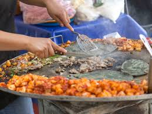

Culture of Mexico
Mexico's culture emerged from the culture of the Spanish Empire and the preexisting indigenous cultures of Mexico. Mexican culture is described as the 'child' of both western and native American civilizations. Other minor influences include those from other regions of Europe, Africa and also Asia.
The country is known for its vibrant and colorful celebrations, such as Dia de los Muertos and Cinco de Mayo, which showcase its cultural heritage. From the iconic mariachi music to the delicious street food, Mexico's popular culture has captured the hearts of people around the globe.

Native ingredients such as varieties of tomatoes, squashes, avocados, cocoa and vanilla augment the basic staples. Mexican cuisine is elaborate and symbol-laden, with everyday tortillas and tamales, both made of corn, forming an integral part of Day of the Dead offerings.Corn is the main base of Mexican cuisine. Corn, chili, and beans were the “holy trinity” of food for Mesoamerican civilizations. In fact, corn is the source of great Mexican dishes such as 'enchiladas', 'huaraches', 'machetes', 'tlacoyos', 'sopes', 'molotes' and 'quesadillas'.For the vast majority of Mexicans of all economic levels, cuisine varies greatly by region but depends heavily on an ancient trinity of staples: corn (maize),beans —which provide an excellent source of protein—and squash. Rice is another staple usually served side by side with beans.